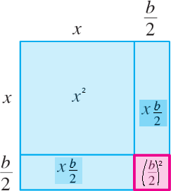

Useful Formulas
Completing the Square
If a quadratic euqation is of the form (x ± a)2 = c, then we can solve it by taking the square root of each side. The left-hand side of this equation is a pefect square: the square of a linear expression in x. If a quadratic equation does not factor readily, then we can solve it using the techinique of completing the square. This meas that we add a constant to an expression to make it a perfect square.
To make x2 + bx a perfect square, add (b/2)2, the square of hald the coefficient of x. This gives the perfect square
The Geometrical interpretation is as follows
Example 1. Solve x2 −8x + 13 = 0 by completing the square
Solution. Write as
x2 −8x = −13
Complete the square: add (−8/2)2 = 16
x2 −8x + 16 = −13 + 16
(x − 4)2 = 3 Perfect square
x − 4 = ± √3
x = 4 ± √3
Square of a trinomial
Now to form the square of a trinomial a + b + c, denote a + b by the single letter s, and we have
(a + b + c)2 = (s + c)2 = s2 + 2sc + c2
But s2 = (a + b)2 = a2 + 2ab + b2; and 2sc = 2(a + b)c = 2ac + 2bc. Hence
(a + b + c)2 = a2 + 2ab + b2 + 2ac + 2bc + c2
that is, the square of a trinomial is composed of the sum of the squares of its three terms, and twice the productg of these term multipliesd together two and two. This law of formation is true for a polynomial of any number of term.
Similarly the cube of a trinomial is computed as follows
(1 + α + α2)3 = [(1 + α) + α2]3 = (1 + α)3 + α6 + 3(1+α)2 α2 + 3(1+α)α4
We introduce now some other useful formulas.
The difference of Powers Formula
Observe that we have the following relations for the difference of squares/cubes
x2 − y2 = (x − y) (x + y)
x3 −y3 = (x − y)(x2 + xy + y2)
.
.
.
xn + 1 − yn + 1 = (x − y) (xn + xn − 1y + ... + xyn − 1 + yn) (1.10.1)
For any natural number n and any numbers x and y. This result can be easily derived using the following equations in any ring x, y in which commute with each other:
x(xn + xn − 1y + ··· + xyn − 1 + yn ) = xn + xny + xn − 1y2 + ··· + xyn (1.10.2)
y(xn + xn − 1y + ··· + xyn − 1 + yn) = xny + xn −1y2 + ··· + xyn + yn + 1 (1.10.3)
The left and right sides of 1.10.2 and 1.10.3 are equal by the distributive law. If we then subtract 1.10.3 from 1.10.2, we get 1.10.1. Another useful formula is for the sum of odd powers:
x2n + 1 + y2n + 1 = (x + y) (x2n − x2n − 1y + ··· − xy2n − 1 + y2n) (1.10.5)
which we can obtain by converting the sum to a difference and relying on the previous result
x2n + 1 + y2n + 1 = x2n + 1 − (−y2n + 1)
= x2n + 1 − (−y)2n + 1
= (x − (−y))(x2n + x2n − 1(−y) + ··· + (−y)2n)
= (x + y)(x2n − x2n − 1y + ··· − xy2n − 1 + y2n)
Here are some examples
x2 − 49 = (x − 7) (x + 7)
x3 − 1 = (x − 1) (x2 + x + 1)
x4 − 81 y4 = (x − 3y) (x3 + 3x2y + 9xy2 + 27y3)
Using the difference of Powers Formula if we take a = 1 and b = r ≠ 1, we obtain the following important identity known as Geometric Sum Formula:
1 + r + ... + rn = (1 − rn + 1)/(1 − r)
Inequality of arithmetic and geometric means
The inequality of arithmetic and geometric means, or more briefly the AM–GM inequality, states that the arithmetic mean of a list of non-negative real numbers is greater than or equal to the geometric mean of the same list; and further, that the two means are equal if and only if every number in the list is the same (in which case they are both that number).
The simplest non-trivial case – i.e., with more than one variable – for two non-negative numbers x and y, is the statement that
with equality if and only if x = y. This case can be seen from the fact that the square of a real number is always non-negative (greater than or equal to zero) and from the elementary case (a ± b)2 = a2 ± 2ab + b2 of the binomial formula:
0 ≤ (x − y)2
= x2 − 2xy + y2
= x2 + 2xy + y2 − 4xy
= (x + y)2 −4xy
Hence (x + y)2 ≥ 4xy, with equality precisely when (x − y)2 = 0, i.e. x = y.